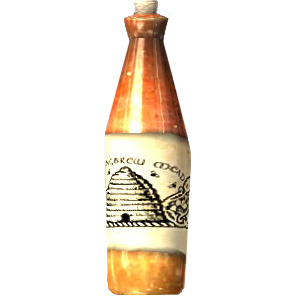

Home
Career
Qualifications
Hobbies
Hobbies and Interests
- Doing side quests for the people of Skyrim
- Doing jobs for the guilds and Brotherhood
- Reading all genres of books, especially skill books
- Meditating and studying the Way of the Voice
- Obliterating bandits
- Hunting and fishing
- Blacksmithing weapons and armor
- Enchanting weapons and armor
- Collecting ingredients and brewing potions
- Feeling well rested
- Eviscerating vampires
- Drinking Honningbrew mead at the Winking Skeever
